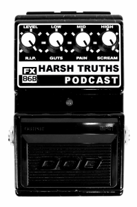
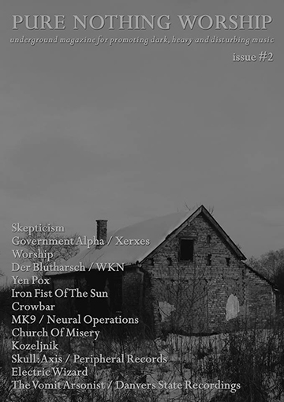

Performances Discography Interviews Main Page
February 12, 2025
Live Crashing Headfolds with Mona
KPCA 103.3 fm
Petaluma Community Radio
Interview on soundcloud
Live Crashing Headfolds is a weekly radio program
playing all forms of experimental music from academic
and fine art down to home taped noises and industrial crud.
2 hours of music and its opposites.
Bring your own questions and leave with new ones.
Link to shows online archive

October 10, 2020
Harsh Truths Podcast
Episode 23: Michael Nine
On our last interview episode before hiatus,
Roman sits down with Michael Nine to discuss his pathway
into experimental sound and performance and his experiences
performing as DEATH SQUAD and beyond.
Listen Here

Pure Nothing Worhship, Belgrade, Serbia 2014
August 2014 MK9 - Interview (in Lithuanian) @ Radikaliai!